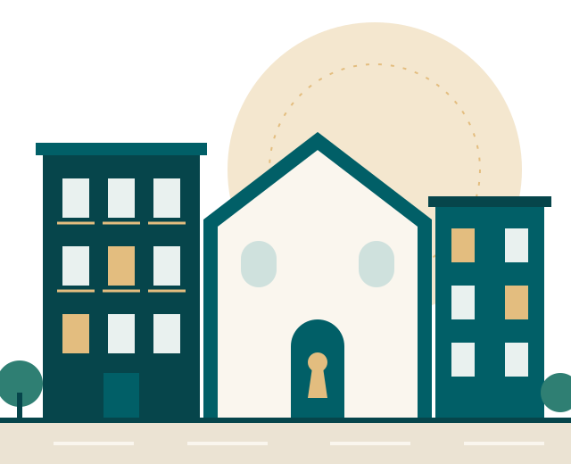
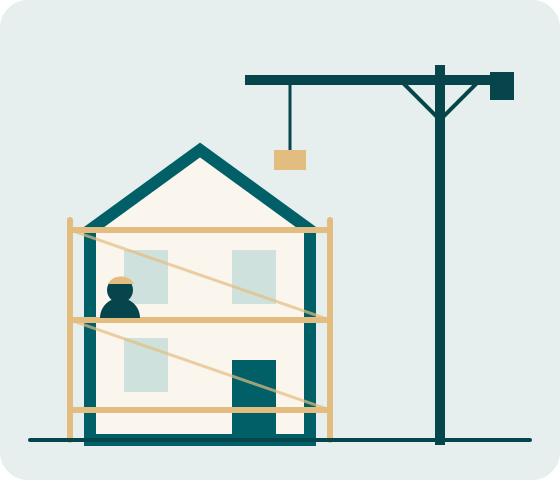

Habitatge cooperatiu en cessió d'ús
La clau d'un habitatge estable, assequible i col·lectiu
Social Clau activa habitatges mitjançant el dret de tanteig i retracte, els rehabilita amb impacte social i els gestiona en cooperativa perquè hi puguis viure amb tranquil·litat, sense especulació.

- 1persona, un vot
- 3entitats, un projecte
- 5passos fins al dret d'ús
- 0especulació
01 Què és?
No compres l'habitatge: en tens el dret d'ús
A Social Clau la propietat és de la cooperativa i queda vinculada per sempre a una finalitat social. Com a persona sòcia, fas una aportació inicial retornable, pagues una quota d'ús assequible i disposes d'un habitatge de manera estable, amb veu i vot en totes les decisions.
És una tercera via entre la compra i el lloguer, inspirada en els models cooperatius que funcionen des de fa dècades al nord d'Europa i que ja creixen a Catalunya.
Per què la cessió d'ús?
-
Estabilitat
Un dret d'ús de llarga durada: sense renovacions de contracte ni pujades imprevisibles.
-
Assequibilitat
Quotes calculades sobre el cost real de l'habitatge, no sobre el preu de mercat.
-
Comunitat
Una persona, un vot. Convivència, corresponsabilitat i cura dels espais compartits.
02 Com funciona?
De l'oportunitat al dret d'ús
Una cadena de valor social completa, en cinc passos simples i verificables.
-
01
Habitatge
Identifiquem habitatges que poden incorporar-se al projecte social.
-
02
Tanteig
S'adquireixen mitjançant el dret de tanteig i retracte.
-
03
Rehabilitació
Es rehabiliten amb criteris tècnics i inserció laboral.
-
04
Cooperativa
Les persones sòcies s'organitzen i decideixen de manera democràtica.
-
05
Dret d'ús
Adjudicació, quotes i entrada a viure. La clau ja és teva.
03 Qui ho impulsa?
Tres organitzacions, un sol projecte
Cada entitat té un rol clar: així no es confonen mai propietat, obra i governança.
-
Adquirir
Associació Social House
Accés als habitatges mitjançant tanteig i retracte, preservació de la finalitat social i coordinació institucional.
-
Rehabilitar
Eina Activa, empresa d'inserció
Diagnosi, pressupost, rehabilitació i control tècnic, amb inserció laboral vinculada a les obres.
-
Habitar
Social Clau, cooperativa
Grup promotor, persones sòcies, dret d'ús, quotes, convivència i participació democràtica.
Adquirir rehabilitar habitar en comunitat

04 Impacte social
Habitatge, ocupació i comunitat
Cada habitatge que recupera Social Clau genera valor més enllà de les seves parets.
- Habitatges recuperats i tornats a l'ús residencial.
- Itineraris laborals per a persones en inserció, en obres reals.
- Patrimoni protegit i vinculat de forma permanent a una finalitat social.
- Governança compartida i corresponsabilitat comunitària.
«La casa és protecció; la clau representa accés i oportunitat; la doble silueta, comunitat.»
05 Preguntes clau
Entendre el model
Què és l'habitatge cooperatiu en cessió d'ús?
És un model en què la cooperativa manté la propietat de l'habitatge i la persona sòcia en té un dret d'ús estable i de llarga durada, a canvi d'una aportació inicial retornable i d'una quota periòdica.
Quin paper té el dret de tanteig i retracte?
És el mecanisme legal que permet adquirir determinats habitatges amb preferència quan es venen, per incorporar-los al circuit d'habitatge social quan es compleixen els requisits jurídics i administratius.
Què aporta una persona sòcia?
Una aportació al capital social, retornable segons els estatuts, i una quota d'ús mensual. Els imports definitius es fixen a la documentació econòmica i contractual de cada promoció.
Com s'assignen els habitatges?
Mitjançant criteris d'admissió i adjudicació aprovats per l'assemblea de la cooperativa, transparents i compatibles amb els requisits socials i administratius aplicables.
En què es diferencia de comprar o de llogar?
No t'endeutes per comprar ni depens de la renovació d'un lloguer: tens un dret d'ús estable, participes en les decisions i l'habitatge queda protegit de l'especulació.
Informació orientativa, subjecta a la validació jurídica, econòmica i administrativa del projecte.
06 Com hi participo?
Obrim la porta al grup promotor
Escriu-nos i explica'ns el teu interès. Et respondrem per correu electrònic.
-
Persona interessada
Vull conèixer els requisits per ser persona sòcia. Indica'ns el municipi, la teva situació i el teu interès.
Escriu-nos -
Entitat o administració
Vull impulsar habitatge social. Explica'ns la teva organització i la teva proposta.
Escriu-nos -
Col·laborador tècnic
Vull sumar capacitats. Digues-nos la teva especialitat i el territori on treballes.
Escriu-nos
O escriu directament a l'adreça de contacte